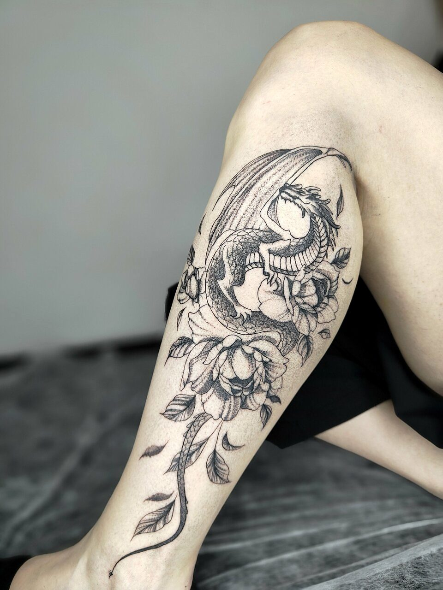
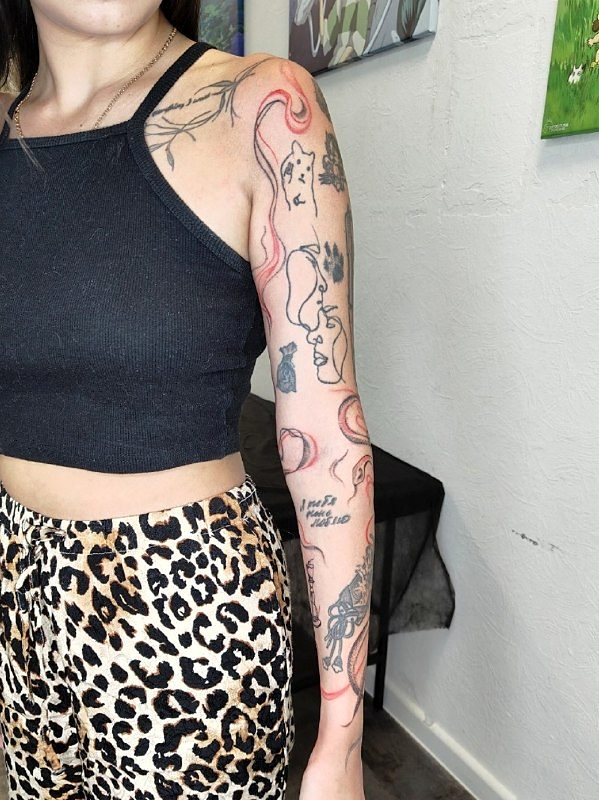
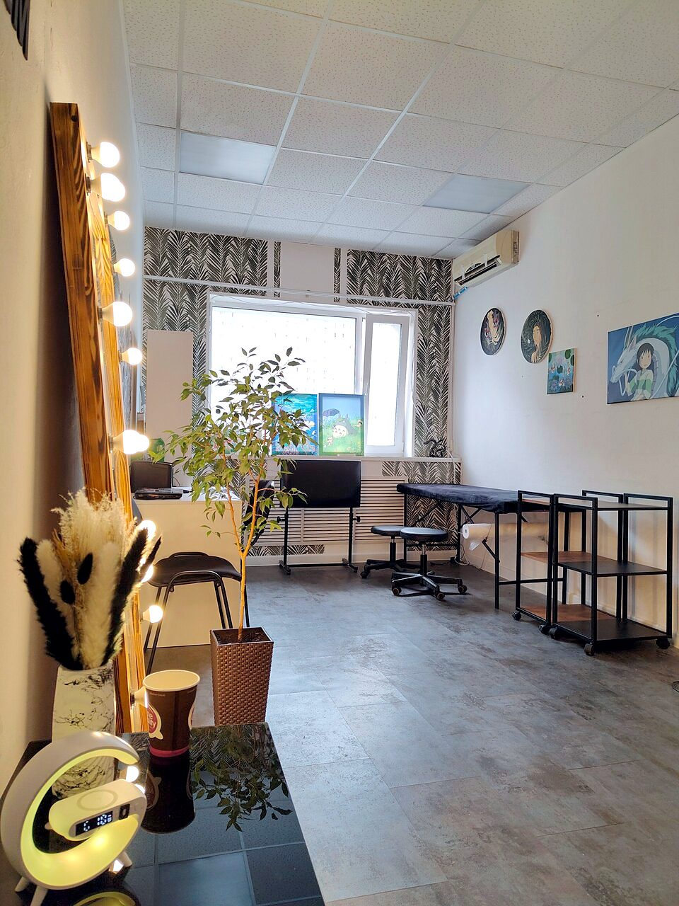
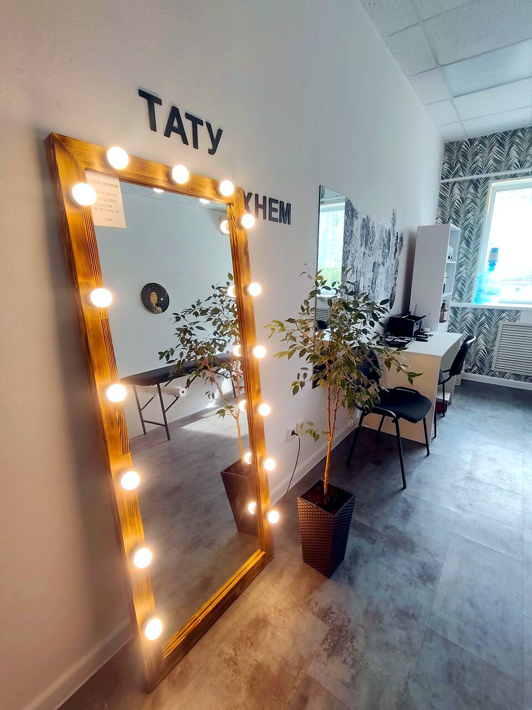
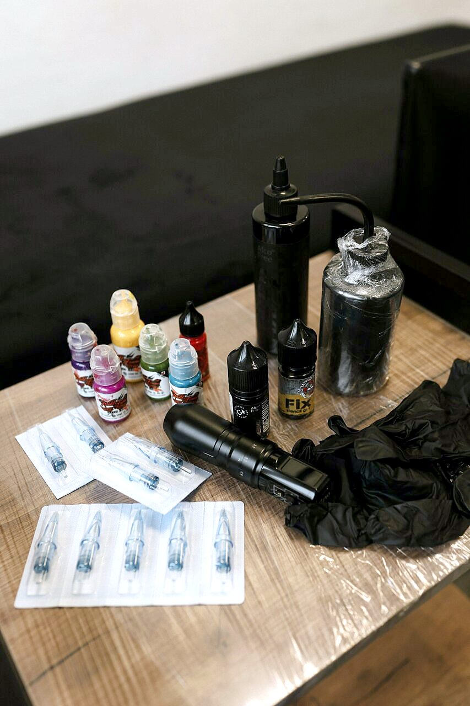

Самара · Революционная, 70, стр. 3
Белый дракон
Эскиз здесь не выбирают из каталога. Его приносят своим и переделывают под вас.
Это самое частое, что пишут в отзывах: «помогла с эскизом, переделала его под меня», «помогла доработать», «помогла разработать». Двенадцать человек из тридцати четырёх сказали про эскиз отдельно.

1Что здесь делают
Тату, перекрытие, брови и обучение мастеров
Всё ниже собрано с их карточки на Картах, из телеграм-канала и из отзывов. Ничего не добавлено.
2Куда бьют
Где на теле она уже работала
Первый вопрос перед первой татуировкой обычно не «сколько стоит», а «а вот сюда вообще делают». Зоны собраны по её же снимкам: нажмите любую.
3Работы
Тонкая линия, мягкая растушёвка, красный на сдачу
Кадры с их карточки на Яндекс Картах и из телеграм-канала. Цвет не трогали: у татуировки цвет и есть работа. Снимки с узнаваемыми лицами не берём.
4Обучение
Сюда приходят и за профессией
В карточке на Картах отдельной строкой стоит «обучение татуировке» и «коворкинг». В отзывах есть и ученицы, и модели с её мастер-классов.
Она ведёт мастер-классы по випшейдингу — это техника мягкой градиентной растушёвки, хлыстом от плотного к прозрачному. Ученицы работают на живых моделях под её присмотром.
Не просто рассказала теорию, а наглядно показывала каждый шаг процесса прямо на коже модели. Ответила на все вопросы, разборчиво и понятно. Елизавета Пон, мастер, прошла повышение квалификации
Как преподаватель Лиза следила за каждым движением, ориентировала ученицу, успокаивала меня, интересовалась о моих болевых ощущениях. Анастасия Буканова, была моделью на мастер-классе

5Мастер
Лиза. Все тридцать четыре отзыва — про неё одну
Студия маленькая и мастер в ней один. В отзывах её зовут то Лизой, то Елизаветой, и почти каждый второй отзыв — не про татуировку, а про то, как с ней сидеть несколько часов. «Несколько часов пролетели незаметно». «Поболтали, придумали идею для следующих тату». «На связи 24/7».
Есть постоянные, которые ходят к ней годами: «знакома с Лизой уже более 3 лет, сделала у неё более 5 татуировок, одна из которых крупный проект». Есть те, кто доверил ей первую в жизни: «свою первую татуировку доверила Лизе, не ошиблась». Есть мужья и жёны, которые пришли за парными.
В телеграме она подписывается «Лиза Аспид» и пишет коротко: «Собираем рукав из мультиков. На предплечье уместилось 11 персонажей, мой фаворит — ёжик, вышел очень милым».
6Студия
Светлая комната с фикусом, а не мрачный подвал
Слово «светлая» встречается в отзывах трижды, «уютная» — девять раз. Ростовое зеркало в обожжённой раме с лампами, белые стены, живые деревья в кашпо, графика на стене. И тапочки на входе.



7Отзывы
Тридцать четыре отзыва, ни одного отрицательного
Настоящие, с их карточки на Яндекс Картах. Сокращены, имена оставлены как в оригинале.
8Цена и запись
Цену называют после эскиза, и это не отговорка
Прайса нет ни на Картах, ни в канале. В шапке телеграма написано прямо: «Для консультации по стоимости и записи пиши». Пока эскиза нет, называть сумму просто не из чего.
От чего она зависит — видно по самим работам: маленькая веточка на запястье и рукав из одиннадцати персонажей это разные разговоры. Вот что меняет счёт:
Сроки взяты из отзывов гостей, там эти цифры названы прямо. Это не обещание студии, а то, как получилось у конкретных людей.
9Адрес
Революционная, 70, строение 3
Первый этаж офисного здания, там же на этаже есть кофе. До метро «Гагаринская» меньше километра.
- Адрес
- Самара, Революционная ул., 70, стр. 3
- Часы
- Ежедневно 9:00–22:00
- Телефон
- +7 (987) 954-64-04
- Рядом
- Метро «Гагаринская» 980 м, остановка «Революционная улица»
- Ещё
- Wi-Fi, парковка, подарочные сертификаты